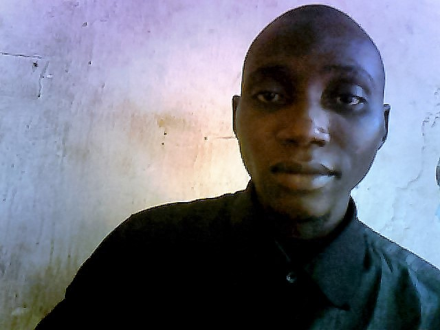

I am a skilled web developer with a strong foundation in PHP and MySQL. I have experience in building various applications, including a report card generator, a food delivery app roadmap, and a nearby toilet app. I am also proficient in product management and user research.
Developed a web application using PHP and MySQL to generate personalized report cards for students. This project showcased my skills in data manipulation, database management, and web development.
View ProjectAs the product manager, I contributed to the planning and ideation phases. I worked closely with the design, development, and testing teams to create a user-friendly app prototype. Key contributions included defining the project scope, gathering user feedback, and collaborating with the team to prioritize features and improve user experience.
As the product manager, I led the planning and ideation phases for this app aimed at helping users locate nearby public toilets. I facilitated user research to identify needs, defined the app's features, and worked with the design and development teams to ensure a user-centric experience.
Email: saminuyusufgarba266@gmail.com
Phone: +2348161296826
LinkedIn: LinkedIn